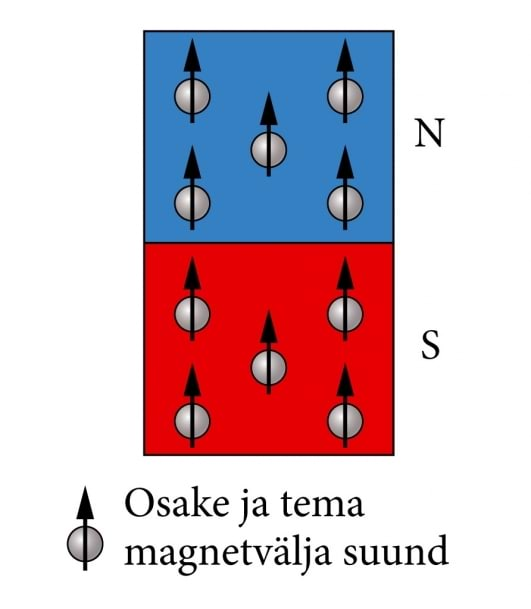
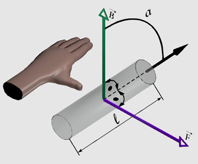
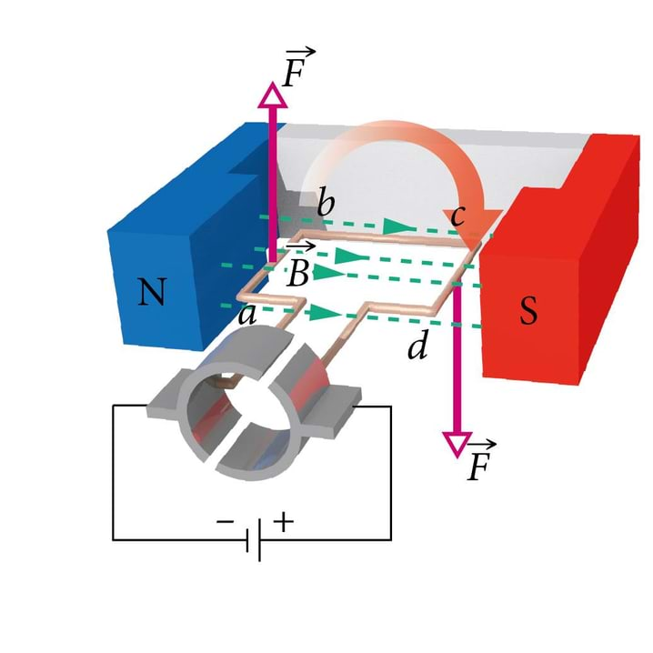

Ampère'i seadus ja magnetinduktsioon
Magnetväli
Juba Vana-Kreekas tunti kivimit (kr - Magnetis lithos), mis oli suuteline raudesemeid enda külge tõmbama. Tavaliselt algab ka tänapäeva inimese tutvus magnetväljaga just püsimagnetitega, mis on oma olemuselt magnetvälja omavad kehad. Hea näitena võime tuua külmkapimagnetid, mille juures märkame, et lähendades üht teisele võib toimuda nii tõukumine kui ka tõmbumine olenevalt sellest, mis asendisse me teise magneti pöörame. See on tingitud põhja- ja lõunapoolustest - erinimelised tõmbuvad ja samanimelised tõukuvad.

Nüüdseks teame juba hästi, et lisaks püsimagnetitele on magnetväli ka elektrivoolu ümber. 1820. a. avaldas Taani füüsik H. C. Oersted oma katsete tulemused,
et juhet läbiv elektrivool avaldab magnetnõelale orienteerivat mõju. Samal aastal näitas A. M. Ampère, et kaks vooluga juhet mõjutavad teineteist samuti magnetjõuga.
Tema tuligi esimesena mõttele, et magnetvälja tekitab laengukandjate liikumine. Tänaseks on selge, et ka püsimagneti omadused on määratud eelkõige elektronide olemuslike magnetväljadega,
mis on tingitud just osakese sisemisest liikumisest ehk spinnist.
Kokkuvõttes:
magnetväljaks nimetatakse laetud osakeste liikumisel tekkivat jõuvälja.
Ampère seadus ja magnetinduktsioon
Ampère’i avastas oma katsete käigus, et vooluga juhtmete vahel mõjuv magnetjõud on sõltuv juhtmete omavahelisest asendist (paralleelsete juhtmete korral maksimaalne, ristuvate korral null),
kaugusest, juhtmete pikkusest ning voolutugevusest juhtmetes. Veel märkas ta, et samasuunaliste vooludega juhtmed tõmbuvad, vastassuunaliste vooludega juhtmed aga tõukuvad.
Esitame nüüd Ampère’i seaduse esimese kuju:
Paralleelsete juhtmete vahel mõjuv magnetjõud \(F_m\) on võrdeline voolutugevustega \(I_1\) ja \(I_2\) kummaski juhtmes
ning vaadeldava juhtmeosa pikkusega \(l\) ning pöördvõrdeline juhtmete vahekaugusega \(r\).
\(F_m=K \frac{I_1 I_2 l}{r}\), vaakumis on konstant \(K=2\cdot 10^{-7} \frac{N}{A^2}\)
Sooviksime aga magnetjõudu leida ka siis, kui tegemist on suvalise magnetvälja ja sellesse asetatud suvalises asendis oleva vooluga juhtmega. Appi tuleb Ampère’i seaduse üldistatud kuju:
Vooluga juhtmele mõjuv jõud \(F_m\) on võrdeline juhet läbiva voolu tugevusega \(I\), juhtme pikkusega \(l\)
ning siinusega nurgast \(\alpha\) voolu suuna ja magnetvälja suuna vahel:
\(F_m = B I l \sin \alpha\)
Võrdetegurit \(B\) nimetatakse magnetinduktsiooniks ja see näitab jõudu, mis mõjub ühikulise vooluga ja ühikulise pikkusega juhtmele selle juhtmega ristuvas magnetväljas.
Seega on ta magnetvälja iseloomustav vektoriaalne suurus ja seda võib nimetada ka B-vektoriks. B-vektori suunda näitab magnetväljas orienteerunud magnetnõela põhjapoolus. Magnetinduktsiooni mõõtühik on üks tesla (1 T).

Jõu suuna määramiseks Ampère’i seaduses võib kasutada vasaku käe reeglit. See väidab, et kui vasaku käe väljasirutatud sõrmed osutavad voolu suunda ja magnetväli on suunatud peopessa, siis väljasirutatud pöial näitab
juhtmelõigule mõjuva jõu suunda.
Vooluga juhtmele mõjuv magnetjõud on suunatud alati risti nii voolu kui ka magnetvälja suunaga.

Kui me tekitame juhtmes meie poole suunatud voolu \(I\), siis hakkab juhtmele Ampere’i seaduse ja vasaku käe reegli kohaselt mõjuma ülespoole suunatud magnetjõud. Võimaluse korral hakkab juhe selles suunas liikuma.
Kirjeldame nähtust kokkuvõtlikult kujul:
magnetväli+elektrivool=liikumine.
Oleme saanud elektrimootori.